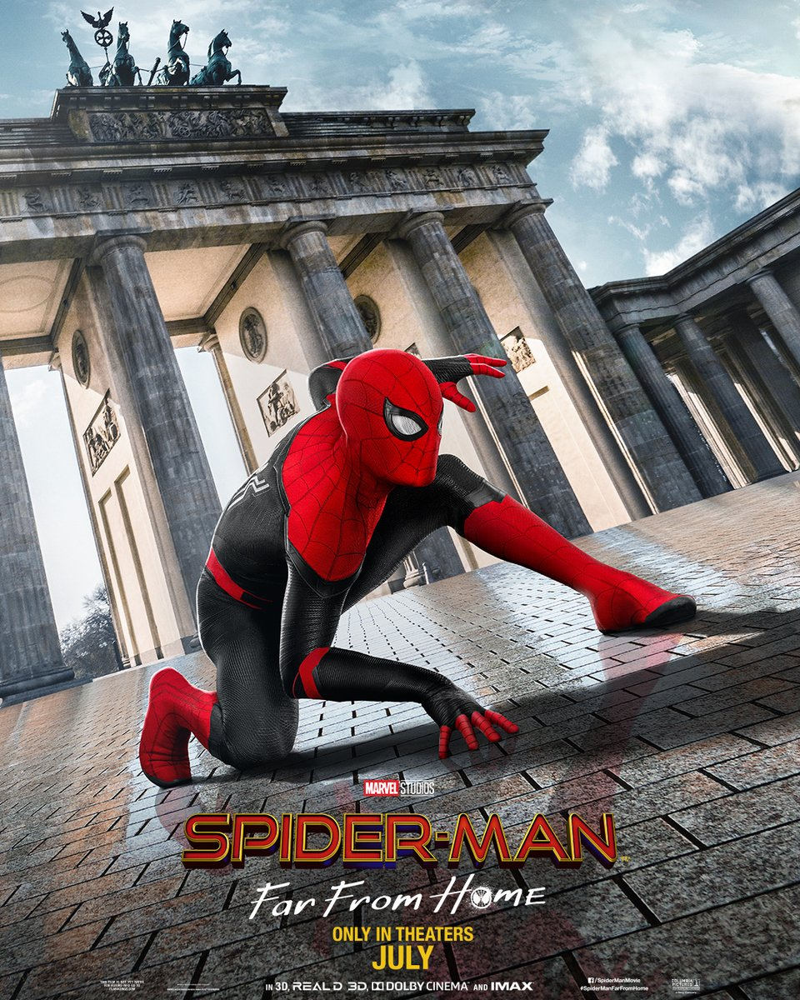

|  |
Movie Name: |
Spider-Man: Far From Home (2019) |
|
In Ixtenco, Mexico, Nick Fury and Maria Hill investigate an unnatural storm and encounter the Earth Elemental. Quentin Beck, a super-powered individual, arrives to fight the creature. In New York City, the Midtown School of Science and Technology completes its academic year which was restarted to accommodate the students who disappeared during the five-year period known as "the Blip". They had reappeared eight months earlier thanks to the actions of the Avengers. The school organizes a two-week summer field trip to Europe, where Peter Parker—still mourning the death of his mentor and father figure Tony Stark—plans to confess his growing feelings for classmate MJ. Parker is warned by Happy Hogan that he will be contacted by Fury, but he chooses to ignore the call. Parker and his classmates travel to Venice, Italy, where the Water Elemental attacks. Parker helps protect his classmates while Beck arrives and destroys the creature. Fury meets with Parker and gives him Stark's glasses, which were meant for his successor. The glasses are equipped with the artificial intelligence E.D.I.T.H., which has access to Stark Industries' databases and commands a large orbital weapons supply. Beck claims to hail from an alternate reality within the Multiverse, where the Elementals killed his family. He now predicts that the Fire Elemental will appear in Prague. Parker declines Fury’s invitation to join Beck's fight against the Elementals and returns to his class trip. Fury secretly changes the school trip's itinerary so Parker will be directed to Prague, and there Parker is forced to help fight the Fire Elemental to again protect his friends. Beck is able to destroy the Fire Elemental with Parker's help. Fury and Hill invite Parker and Beck to Berlin to discuss the formation of a new superhero team, but Parker decides that Beck should go alone and bequeaths him the E.D.I.T.H. glasses. Unknown to Parker, Beck is actually a former holographic-illusions specialist at Stark Industries who was fired for his unstable nature. He now leads a team of disgruntled ex-Stark employees, using advanced projector drones to simulate the Elemental attacks and masquerade as a hero; their plan was to gain access to E.D.I.T.H. so they could use the orbital weapons system's drones to increase the scale of their illusions. MJ deduces Parker is Spider-Man. They discover that a piece of debris she retrieved during the carnival battle is a projector that presents a simulation of the Air Elemental, leading the two to realize Beck is a fraud. Parker travels to Berlin to meet with Fury, but is actually in one of Beck's illusions and accidentally reveals that some of his friends know about Beck's plan. Distracted by the illusion, Parker is hit by a train and carried away to the Netherlands. From there Parker contacts Hogan, who flies them to London where his classmates are now on their way home. In London, Beck uses E.D.I.T.H. to orchestrate his biggest illusion yet, a fusion of all four Elementals, as a cover to kill Parker's friends. Parker is able to disrupt the illusion, so Beck fully reveals the drones to attack him. Parker defeats Beck, regaining control of E.D.I.T.H. to call off the drone attacks. Beck dies from wounds sustained from misfired drone gunshots. An assistant of Beck's escapes with data from the drones. Parker returns to New York City and begins a relationship with MJ. In a mid-credits scene, journalist J. Jonah Jameson of TheDailyBugle.net broadcasts doctored footage of the London incident in which Beck frames Spider-Man for the drone attack and his death, before exposing Spider-Man's secret identity to the world. In a post-credits scene, Fury and Hill are revealed to be the Skrulls Talos and Soren in disguise, under orders from the real Fury who is seen commanding a Skrull spaceship. |
||